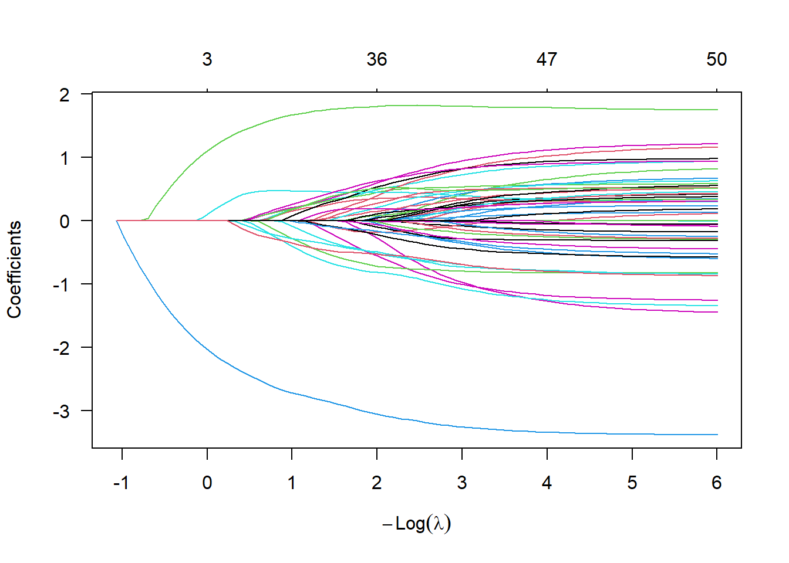
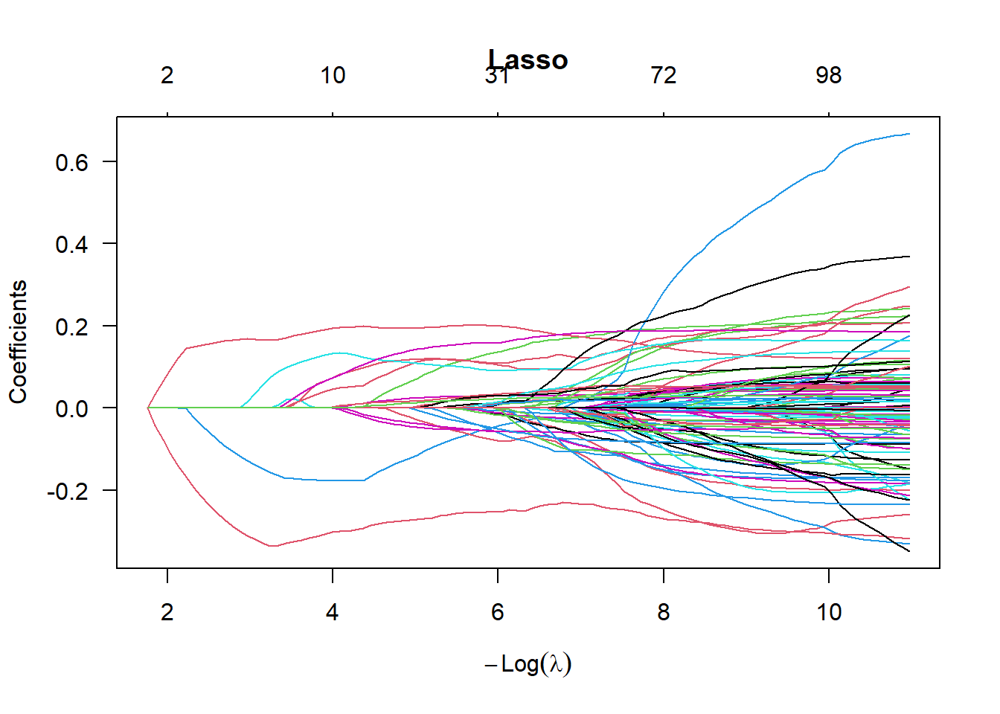
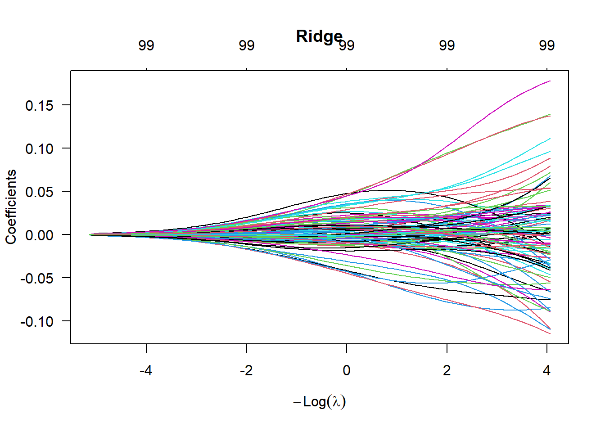
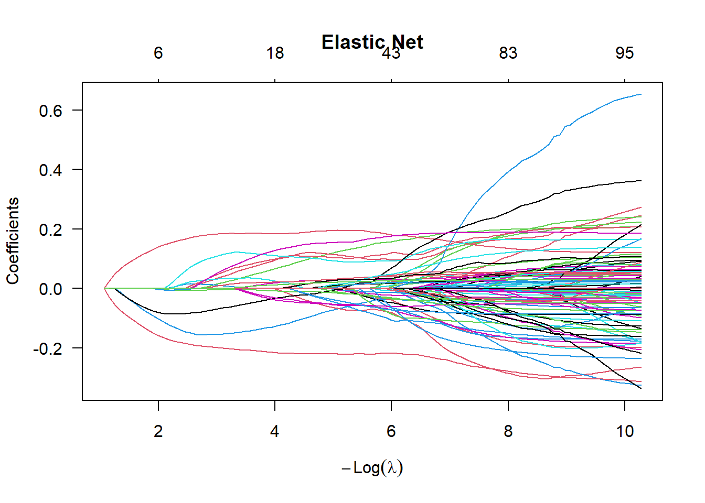

The following sections will discuss various topics regarding constructing a good representative regression model for your data. Three main topics will be considered.
First, multicollinearity deals with the problem of linear relationships between your regressions. We already know that we require the columns of the design matrix to be linearly independent in order to solve for the least squares estimate. However, it is possible to have near dependencies among the columns. This can lead to numerical stability issues and unnecessary redundancy among the regressors.
Second, there are many different variable selection techniques in existence. Given a large number of regressors to can be included in a model, the question is, which should and which should not be included? We will discuss various techniques such as forward and backward selection as well as different tools for comparing models.
Third, penalized regression will be discussed. This section introduces two modern and quite powerful approaches to linear regression: ridge regression from the 1970’s and LASSO from the 1990’s. Both arise from modifying how we estimate the parameter vector \(\hat{\beta}\). Up until now, we have chosen \(\hat{\beta}\) to minimize the sum of the squared error. Now, we will add a penalty term to this optimization problem, which will encourage choices of \(\hat{\beta}\) with small-in-magnitude or just zero entries.
3.2 Multicollinearity
The concept of multicollinearity is intuitively simple. Say we have a model of the form \[
y = \beta_0 + \beta_1x_1 + \beta_2x_2 +\varepsilon.
\] This results in a design matrix of the form \[
X = \begin{pmatrix}
1 & x_{1,1} & x_{1,2} \\
\vdots & \vdots & \vdots \\
1 & x_{n,1} & x_{n,2}
\end{pmatrix}
\] Then, we can consider a new model of the form \[
x_2 = \alpha_0 + \alpha_1x_1 + \varepsilon.
\] If this simple regression has a strong fit—e.g. A significant F-test or \(R^2\) value—then the addition of the regressor \(x_2\) to the original model is unnecessary as almost all of the explanatory information provided by \(x_2\) with regards to predicting \(y\) is already provided by \(x_1\). Hence, the inclusion of \(x_2\) in our model is superfluous.
Taking a more mathematical approach, it can be shown that such near linear dependencies lead to a very high variance for the least squares estimator \(\hat{\beta}\). Furthermore, the magnitude of the vector is much larger than it should be.
Assuming that the errors have a covariance matrix \(\mathrm{Var}\left(\varepsilon\right) = \sigma^2I_n\), then we have from before that \[\begin{multline*}
\mathrm{Var}\left(\hat{\beta}\right)
= \mathrm{Var}\left( ({X}^\mathrm{T}X)^{-1}{X}^\mathrm{T}Y \right) = \\
= ({X}^\mathrm{T}X)^{-1}{X}^\mathrm{T} \mathrm{Var}\left(Y\right) X({X}^\mathrm{T}X)^{-1}
= \sigma^2({X}^\mathrm{T}X)^{-1}.
\end{multline*}\] With some effort, it can be shown that the diagonal entries of the matrix \(({X}^\mathrm{T}X)^{-1}\) are equal to \((1-R^2_0)^{-1},\ldots,(1-R^2_p)^{-1}\) where $ R_j^2 $ is the coefficient of determination for the model \[
x_j = \alpha_0 + \alpha_1x_1 +\ldots
+ \alpha_{j-1}x_{j-1} + \alpha_{j+1}x_{j+1} + \ldots
+ \alpha_{p}x_p + \varepsilon,
\] which is trying to predict the \(j\)th regressor by the other \(p-1\) regressors. If the remaining regressors are good predictors for \(x_j\), then the value \(R_j^2\) will be close to 1. Hence, \[\mathrm{Var}\left(\hat{\beta}_j\right) = \frac{\sigma^2}{1-R_j^2}\] will be very large.
Furthermore, this implies that the expected Euclidean distance between \(\hat{\beta}\) and \(\beta\) will be quite large as well. Indeed, we have \[
\mathrm{E}\left(
{(\hat{\beta}-\beta)}^\mathrm{T}
{(\hat{\beta}-\beta)}
\right)
= \sum_{i=0}^p \mathrm{E}\left( \hat{\beta}_i-\beta_i \right)^2
= \sum_{i=0}^p \mathrm{Var}\left( \hat{\beta}_i \right)
= \sigma^2 \mathrm{tr}\left(({X}^\mathrm{T}X)^{-1}\right)
\] where \(\mathrm{tr}\left(\cdot\right)\) denotes the trace of a matrix–i.e. the sum of the diagonal entries. Hence, if at least one of the \(R_j^2\) is close to 1, then the expected distance from our estimator to the true \(\beta\) will be quite large.
The trace of a matrix is also equal to the sum of its eigenvalues. Hence, if we denote the eigenvalues of \({X}^\mathrm{T}X\) by \(\lambda_1,\ldots,\lambda_{p+1}\), then \[
\mathrm{tr}\left(({X}^\mathrm{T}X)^{-1}\right) = \sum_{i=1}^{p+1} \lambda_{i}^{-1}.
\] Hence, an equivalent condition to check for multicollinearity is the presence of eigenvalues of \({X}^\mathrm{T}X\) very close to zero, which would make the above sum very large.
3.2.1 Identifying Multicollinearity
To identify the presence of multicollinearity in our linear regression, there are many measures to consider.
We already established that near linear dependencies will result in large values for the diagonal entries of \(({X}^\mathrm{T}X)^{-1}\). These values are known as the Variance Inflation Factors and sometimes written as $ _i = (1-R_i2){-1}. $
An interesting interpretation of the VIF is in terms of confidence intervals. Recall that for \(\beta_j\), we can construct a \(1-\alpha\) confidence interval as \[
-t_{\alpha/2,n-p-1}\sqrt{ ({X}^\mathrm{T}X)^{-1}_{j,j}\frac{SS_\text{res}}{n-p-1} }
\le \beta_j - \hat{\beta}_j \le
t_{\alpha/2,n-p-1}\sqrt{ ({X}^\mathrm{T}X)^{-1}_{j,j}\frac{SS_\text{res}}{n-p-1} }.
\] If all \(i\ne j\) regressors are orthogonal to the \(j\)th regressor, then \(R_j^2=0\) and the term \(({X}^\mathrm{T}X)^{-1}_{j,j}=1\). Under multicollinearity, \(({X}^\mathrm{T}X)^{-1}_{j,j}\gg1\). Hence, the confidence interval is expanded by a factor of \(\sqrt{({X}^\mathrm{T}X)^{-1}_{j,j}}\) when the regressors are not orthogonal.
We can alternatively examine the eigenvalues of the matrix \({X}^\mathrm{T}X\). Recall that finding the least squares estimator is equivalent to solving a system of linear equations of the form \[
{X}^\mathrm{T}X\hat{\beta} = {X}^\mathrm{T}Y.
\] To measure to stability of a solution to a system of equations to small perturbations, a term referred to as the condition number is used. This term arises in more generality in numerical analysis; See Condition Number. It is \[
\kappa = \lambda_{\max}/\lambda_{\min}
\] where \(\lambda_{\max}\) and \(\lambda_{\min}\) are the maximal and minimal eigenvalues, respectively. According to Montgomery, Peck, & Vining, values of \(\kappa\) less than 100 are not significant whereas values greater than 1000 indicate severe multicollinearity.
If the minimal eigenvalue is very small, we can use the corresponding eigenvector to understand the nature of the linear dependency. That is, consider the eigenvector \(u = (u_0,u_1,\ldots,u_p)\) for the matrix \({X}^\mathrm{T}X\) corresponding to the eigenvalue \(\lambda_{\min}\). Recall that this implies that \[
({X}^\mathrm{T}X) u = \lambda_{\min} u \approx 0,
\] which is approximately zero because \(\lambda_{\min}\) is close to zero. Hence, for regressors \(1,x_1,\ldots,x_p\), \[
u_0 + u_1x_1 + \ldots + u_p x_p \approx 0.
\] Thus, we can use the eigenvectors with small eigenvalues to get a linear relationship between the regressors.
Remark 3.1. If you are familiar with the concept of the Singular Value Decomposition, then you could alternatively consider the ratio between the maximal and minimal singular values of the design matrix \(X\). Furthermore, you can also analyze the singular vectors instead of the eigen vectors.
3.2.2 Correcting Multicollinearity
Ideally, we would design a model such that the columns of the design matrix \(X\) are linearly independent.
Of course, in practise, this is often not achievable. When confronted with real world data, there are still some options available.
First, the regressors can be respecified. That is, if \(x_1\) and \(x_2\) are near linearly related, then instead of including both terms in the model, we can include a single combination term like \(x_1x_2\) or \((x_1+x_2)/2\). Second, one of the two variables can be dropped from the model, which will be discussed below when we consider variable selection.
More sophisticated solutions to this problem include penalized regression techniques, which we will discuss below. Also, principal components regression—See Montgomery, Peck, Vining Sections 9.5.4 for more on PC regression—and partial least squares are two other methods that can be applied to deal with multicollinear data.
Remark 3.2. A common thread among all of these alternatives is that they result in a biased estimate for \(\beta\) unlike the usual least squares estimator. Often in statistics, we begin with unbiased estimators, but can often achieve a better estimator by adding a small amount of bias. This is the so-called bias-variance tradeoff.
3.3 Variable Selection
In general, if we have \(p\) regressors, we may want to build a model consisting only of the best regressors for modelling the response variable. In some sense, we could compare all possible subset models. However, there are many issues with this, which we will address in the following subsections. First, what are the effects of removing regressors from your model? Second, how do we compare models if they are not nested? Third, there are \(2^p\) possible models to consider. Exhaustively fitting and comparing all of these models may be computational impractical or impossible. Hence, how do we find a good subset of the regressors?
3.3.1 Subset Models
What happens to the model when we remove some regressors? Assume we have a sample of \(n\) observations and \(p+q\) regressors and want to remove \(q\) of them.
The full model would be \[
y = \beta_0 + \beta_1 x_1 + \ldots + \beta_{p+q}x_{p+q} +\varepsilon.
\] This can be written in terms of the design matrix and partitioned over the two sets of regressors as \[\begin{align*}
Y &= X\beta + \varepsilon\\
&= X_p\beta_p + X_q\beta_q + \varepsilon
\end{align*}\] where \(X_p \in\mathbb{R}^{n\times p}\), \(X_q\in\mathbb{R}^{n\times q}\), \(\beta_p\in\mathbb{R}^p\), \(\beta_q\in\mathbb{R}^q\), and \[
X = \begin{pmatrix}
X_p & X_q
\end{pmatrix},~~~~
\beta = \begin{pmatrix}
\beta_p \\ \beta_q
\end{pmatrix}
\]
We have two models to compare. The first is the full model, \(Y = X\beta + \varepsilon\), where we denote the least squares estimator as \(\hat{\beta} = ({X}^\mathrm{T}X)^{-1}{X}^\mathrm{T}Y\) as usual with components \[
\hat{\beta} =
\begin{pmatrix} \hat{\beta}_p \\ \hat{\beta}_q \end{pmatrix}.
\] The second is the reduced model obtained by deleting \(q\) regressors: \(Y = X_p\beta_p + \varepsilon\). The least squares estimator for this model will be denoted as \(\tilde{\beta}_p = ({X}^\mathrm{T}_pX_p)^{-1}{X}^\mathrm{T}_pY\)
3.3.1.1 Bias may increas
The first concern with the reduced model is that the estimator \(\tilde{\beta}_p\) can be biased as \[\begin{multline*}
\mathrm{E}{ \tilde{\beta}_p } =
({X}^\mathrm{T}_pX_p)^{-1}{X}^\mathrm{T}_p \mathrm{E}Y =
({X}^\mathrm{T}_pX_p)^{-1}{X}^\mathrm{T}_p ( X_p\beta_p + X_q\beta_q ) =\\=
\beta_p + ({X}^\mathrm{T}_pX_p)^{-1}{X}^\mathrm{T}_p X_q\beta_q =
\beta_p + A\beta_q.
\end{multline*}\] Hence, our reduced estimator is only unbiased in two cases. Case one is when \(A=0\), which occurs if the \(p\) regressors and \(q\) regressors are orthogonal resulting in \({X}^\mathrm{T}_p X_q=0\). Case two is when \(\beta_q=0\), which occurs if those regressors have no effect on the given response. If neither of these cases occurs, then \(A\beta_q\ne0\) and represents the bias in our estimator \(\tilde{\beta}_p\). Note that the matrix \(A\) is referred to as the alias matrix.
3.3.1.2 Variance may decrease
While deleting regressors can result in the addition of bias to our estimate, it can also result in a reduction in the variance of our estimator. Namely, \[\begin{align*}
\mathrm{Var}\left(\tilde{\beta}_p\right) &=
\sigma^2({X}^\mathrm{T}_pX_p)^{-1}, \text{ while }\\
\mathrm{Var}\left(\hat{\beta}_p\right) &=
\sigma^2({X}^\mathrm{T}_pX_p)^{-1} +
\sigma^2 A[ {X_q}^\mathrm{T}( I-P_p )X_q ]^{-1}{A}^\mathrm{T},
\end{align*}\] where \(P_p = X_p({X}^\mathrm{T}_pX_p)^{-1}{X}^\mathrm{T}_p\). This expression can be derived via the formula for inverting a block matrix. The matrix \(A[ {X_q}^\mathrm{T}( I-P_p )X_q ]^{-1}{A}^\mathrm{T}\) is symmetric positive semi-definite, so the variance for \(\hat{\beta}_p\) can only be larger than \(\tilde{\beta}_p\).
3.3.1.3 MSE may or may not improve
Generally in statistics, when deciding whether or not the increase in the bias is worth the decrease in the variance, we consider the change in the mean squared error (MSE) of our estimate.
This is, \[\begin{align*}
\text{MSE}(\tilde{\beta}_p)
&= \mathrm{E}\left(
(\tilde{\beta}_p-\beta_p)
{(\tilde{\beta}_p-\beta_p)}^\mathrm{T} \right) \\
&= \mathrm{E}\left(
(\tilde{\beta}_p-\mathrm{E}\tilde{\beta}_p+\mathrm{E}\tilde{\beta}_p-\beta_p)
{(\tilde{\beta}_p-\mathrm{E}\tilde{\beta}_p+\mathrm{E}\tilde{\beta}_p-\beta_p)}^\mathrm{T} \right) \\
&= \text{var}(\tilde{\beta}_p) + \text{bias}(\tilde{\beta}_p)^2 \\
&= \sigma^2({X}^\mathrm{T}_pX_p)^{-1} + A\beta_q{\beta}^\mathrm{T}_q{A}^\mathrm{T}.
\end{align*}\] For the full model, \[
\text{MSE}(\hat{\beta}_p) =
\text{var}(\hat{\beta}_p) =
\sigma^2({X}^\mathrm{T}_pX_p)^{-1} +
\sigma^2 A[ {X}^\mathrm{T}_q( I-P_p )X_q ]^{-1}{A}^\mathrm{T},
\] If \(\text{MSE}(\hat{\beta}_p) - \text{MSE}(\tilde{\beta}_p)\) is positive semi-definite, then the mean squared error has decreased upon the removal of the regressors in \(X_q\).
3.3.2 Model Comparison
We have already compared models in Chapter 1 with the partial F-test. However, for that test to make sense, we require the models to be nested–i.e. the larger model must contain all of the parameters of the smaller model. But, given a model \[
y = \beta_0 + \beta_1x_1 +\ldots+ \beta_px_p + \varepsilon,
\] we may want to compare two different subset models that are not nested. Hence, we have some different measures to consider.
Note that ideally, we would compare all possible subset models. However, given \(p\) regressors, there are \(2^p\) different models to consider, which will often be computationally infeasible. Hence, we will consider two approaches to model selection that avoid this combinatorial problem.
Remark 3.3. To avoid confusion and awkward notation, assume that all subset models will always contain the intercept term \(\beta_0\)
3.3.2.1 Residual Sum of Squares
For two subset models with \(p_1\) and \(p_2\) regressors, respectively, with \(p_1<p\) and \(p_2<p\), we can compare the mean residual sum of squares for each \[
\frac{SS_\text{res}(p_1)}{n-p_1-1}
~~~\text{ vs }~~~
\frac{SS_\text{res}(p_2)}{n-p_2-1}
\] and choose the model with the smaller value.
We know from before that the mean of the residual sum of squares for the full model, \(SS_\text{res}/(n-p-1)\), is an unbiased estimator for \(\sigma^2\). Similar to the calculations in the previous section, we can show that \[
\mathrm{E}\left(\frac{SS_\text{res}(p_1)}{n-p_1-1}\right) \ge \sigma^2
~~~\text{ and }~~~
\mathrm{E}\left(\frac{SS_\text{res}(p_2)}{n-p_2-1}\right) \ge \sigma^2,
\] which is that these estimators for subset models are upwardly biased.
3.3.2.2 Mallows’ \(C_p\)
We can also compare different models by computing Mallows’ \(C_p\). The goal of this value is to choose the model the minimizes the mean squared prediction error, which is \[
MSPE = \sum_{i=1}^n \frac{\mathrm{E}\left(\tilde{y}_i-\mathrm{E}y_i\right)^2}{\sigma^2}
\] where \(\tilde{y_i}\) is the \(i\)th fitted value of the submodel and \(\mathrm{E}y_i\) is the \(i\)th fitted value of the true model. Furthermore, let \(\hat{y}_i\) be the \(i\)th fitted value for the full model. This is the expected squared difference between what the submodel predicts and what the real value is. As usual with mean squared errors in statistics, we rewrite this in terms of the variance plus the squared bias, which is \[\begin{align*}
MSPE
&= \frac{1}{\sigma^2}\sum_{i=1}^n \left[
\mathrm{E}\left(\tilde{y}_i-\mathrm{E}\tilde{y}_i+\mathrm{E}\tilde{y}_i-\mathrm{E}y_i\right)^2
\right] \\
&= \frac{1}{\sigma^2}\sum_{i=1}^n \left[
\mathrm{E}\left(\tilde{y}_i-\mathrm{E}\tilde{y}_i\right)^2+({\mathrm{E}\tilde{y}_i-\mathrm{E}y_i})^2
\right] \\
&= \frac{1}{\sigma^2}\sum_{i=1}^n \left[
\mathrm{Var}\left(\tilde{y}_i\right)+\text{bias}(\tilde{y}_i)^2
\right]
\end{align*}\]
Recall that the variance of the fitted values for the full model is \(\mathrm{Var}\left(\hat{y}\right) = \sigma^2P_x\) where \(P_x = X({X}^\mathrm{T}X)^{-1}{X}^\mathrm{T}\). For a submodel with \(p_1<p\) regressors and design matrix \(X_{p_1}\), we get the similar \(\mathrm{Var}\left(\tilde{y}\right) = \sigma^2X_{p_1}({X}^\mathrm{T}_{p_1}X_{p_1})^{-1}{X}^\mathrm{T}_{p_1}\). As \(X_{p_1}({X}^\mathrm{T}_{p_1}X_{p_1})^{-1}{X}^\mathrm{T}_{p_1}\) is a rank \(p_1+1\) projection matrix, we have that \[
\sum_{i=1}^n \mathrm{Var}\left(\tilde{y}_i\right) =
\sigma^2\mathrm{tr}\left(X_{p_1}({X}^\mathrm{T}_{p_1}X_{p_1})^{-1}{X}^\mathrm{T}_{p_1}\right) =
\sigma^2(p_1+1).
\]
For the bias term, consider the expected residual sum of squares for the submodel: \[\begin{align*}
\mathrm{E}\left(SS_\text{res}(p_1)\right)
&= \mathrm{E}\sum_{i=1}^n ( y_i - \tilde{y}_i )^2 \\
&= \mathrm{E}\sum_{i=1}^n (
y_i -
\mathrm{E}{\tilde{y}_i} + \mathrm{E}{\tilde{y}_i} -
\mathrm{E}{{y}_i} + \mathrm{E}{{y}_i}
- \tilde{y}_i )^2 \\
&= \sum_{i=1}^n\left[
\mathrm{Var}\left(\tilde{r}_i\right) + (\mathrm{E}\tilde{y}_i-\mathrm{E}y_i)^2
\right]\\
&= (n-p_1-1)\sigma^2 + \sum_{i=1}^n \text{bias}(\tilde{y}_i)^2.
\end{align*}\] Hence, rearranging the terms above gives \[
\sum_{i=1}^n \text{bias}(\tilde{y}_i)^2
= \mathrm{E}\left(SS_\text{res}(p_1)\right) - (n-p_1-1).
\] Combining the bias and the variance terms derived above results in Mallows’ \(C_p\) statistic for a submodel with \(p_1<p\) regressors: %\begin{multline}\[
C_{p_1} =
\frac{\mathrm{E}\left(SS_\text{res}(p_1)\right)}{\sigma^2} - n+2p_1+2 \approx%\\\approx
\frac{SS_\text{res}(p_1)}{SS_\text{res}/(n-p-1)} - n+2p_1+2.
\] %\end{multline} Here, we estimate \(\mathrm{E}\left(SS_\text{res}(p_1)\right)\) by \(SS_\text{res}(p_1)\) and estimate \(\sigma^2\) by \(SS_\text{res}/(n-p-1)\).
Remark 3.4. Note that if we compute Mallows’ \(C_p\) for the full model, we get \[
C_p
= \frac{SS_\text{res}}{SS_\text{res}/(n-p-1)} - n+2p+2
= p+1.
\] Hence, Mallows’ \(C_p\) in this case is just the number of parameters in the model. In general, we want to find submodels with \(C_p\) value smaller than \(p+1\).
3.3.2.3 Information Criteria
Information criteria are concerned with quantifying the amount of information in a model. With such a measure, we can choose a model that optimizes this measurement. A main requirement for these methods is that the response \(y\) is the same. Hence, we should not use the measures below when comparing transformed models–e.g. different linearized models–without the necessary modifications.
The first such measure is the Akaike Information Criterion or AIC, which is a measure of the entropy of a model. Its general definition is \[
\text{AIC} = -2\log(\text{Likelihood}) +
2(\text{\# parameters})
\] where \(p\) is the number of parameters in the model. This can be thought of a measurement of how much information is lost when modelling complex data with a \(p\) parameter model. Hence, the model with the minimal AIC will be optimal in some sense.
In our least squares regression case with normally distributed errors, \[
\text{AIC} = n\log(SS_\text{res}/n) + 2(p+1)
\] where \(p+1\) is for the \(p\) regressors and 1 intercept term. Thus, adding more regressors will decrease \(SS_\text{res}\) but will increase \(p\). The goal is to find a model with the minimal AIC. This can be shown to give the same ordering as Mallows’ \(C_p\) when the errors are normally distributed.
The second such measure is the closely related Bayesian Information Criterion or BIC, which, in general, is \[
\text{BIC} = -2\log(\text{Likelihood}) + (\text{\# parameters})\log n.
\] In the linear regression setting with normally distributed errors, \[
\text{BIC} = n\log(SS_\text{res}/n) + (p+1)\log n.
\]
Remark 3.5. Using AIC versus using BIC for model selection can sometimes result in different final choices. In some cases, one may be preferred, but often both can be tried and discrepancies, if they exist, can be reported.
There are also other information criterion that are not as common in practise such as the Deviation Information Criterion (DIC) and the Focused Information Criterion (FIC).
3.3.3 Forward and Backward Selection
Ideally, we choose a measure for model selection from the previous section and then compare all possible models. However, for \(p\) possible regressors, this will result in \(2^p\) models to check, which may be computationally infeasible. Hence, there are iterative approaches that can be effective.
Forward selection is the process of starting with the constant model \[
y = \beta_0 + \varepsilon
\] and choosing the best of the \(p\) regressors with respect to the model selection criterion. This gives \[
y = \beta_0 + \beta_1x_1 + \varepsilon.
\] This process will continue to add terms to the model as long as it results in an improvement in the criterion. For example, computing the AIC at each step.
Backwards selection is the reverse of forward selection. In this case, the algorithm begins with the full model, \[
y = \beta_0 + \beta_1x_1 + \ldots + \beta_p x_p +\varepsilon,
\] and iteratively removes the regressor that gives the biggest improvement in the model selection criterion. If the best choice is to remove no regressors, then the process terminates.
A third option is stepwise selection, which incorporates both forward and backward steps. In this case, we begin with the constant model as in forward selection. However, at every step, we choose either to add a new regressor to our model or remove one that is already in the model depending on which choice improves the criterion the most.
3.3.3.1 Variable Selection Example
Consider the same example as in the spline section where \(x\in[0,2]\) and \[
y = 2 + 3x - 4x^5 + x^7 + \varepsilon
\] with a sample of \(n=41\) observations. We can fit two regression models, an empty and a saturated model, respectively, \[
y = \beta_0 +\varepsilon~\text{ and }~
y = \beta_0 + \sum_{i=1}^7 \beta_i x^i + \varepsilon.
\] and use the R function step( ) to choose a best model with respect to AIC.
set.seed(256)# Generate Data from a degree-7 polynomialxx =seq(0,2,0.05)len =length(xx)yy =2+3*xx -4*xx^5+ xx^7+rnorm(len,0,4)# Fit the null and saturated models# Note: never ever fit a polynomial model# like this. We are trying to create# a model with high multicollinearity# for educational purposes. md0 =lm(yy~1);md7 =lm( yy~xx+I(xx^2)+I(xx^3)+I(xx^4)+I(xx^5)+I(xx^6)+I(xx^7))summary(md0)
Call:
lm(formula = yy ~ 1)
Residuals:
Min 1Q Median 3Q Max
-10.4234 -3.9053 0.8976 4.0282 9.4048
Coefficients:
Estimate Std. Error t value Pr(>|t|)
(Intercept) 0.6483 0.7630 0.85 0.401
Residual standard error: 4.886 on 40 degrees of freedom
summary(md7)
Call:
lm(formula = yy ~ xx + I(xx^2) + I(xx^3) + I(xx^4) + I(xx^5) +
I(xx^6) + I(xx^7))
Residuals:
Min 1Q Median 3Q Max
-7.7630 -2.3611 -0.7164 2.2562 7.3220
Coefficients:
Estimate Std. Error t value Pr(>|t|)
(Intercept) 0.529 3.554 0.149 0.883
xx -26.747 70.159 -0.381 0.705
I(xx^2) 271.061 434.342 0.624 0.537
I(xx^3) -799.042 1158.236 -0.690 0.495
I(xx^4) 1124.811 1557.892 0.722 0.475
I(xx^5) -824.786 1108.239 -0.744 0.462
I(xx^6) 300.118 397.719 0.755 0.456
I(xx^7) -42.561 56.669 -0.751 0.458
Residual standard error: 3.982 on 33 degrees of freedom
Multiple R-squared: 0.4518, Adjusted R-squared: 0.3356
F-statistic: 3.886 on 7 and 33 DF, p-value: 0.003437
First, we note that this (non-orthogonal) polynomial model is very poorly specified. That is, the estimated coefficients vary wildly and are effectively trying to counter balance each other. None of our t-statistics are significant meaning that we can remove any of these terms individually without harming the fit of the model. The F-statistic is significant indicating that, globally, this model is significantly reducing the residual sum of squares.
First, we apply backwards variable selection. The result is an AIC that drops from 120.42 to 113.29 and the following fitted model: \[
y = 0.56 + 20.47x^2 - 18.59 x^3 + 1.09 x^6.
\] In this case, we did not recover the model that was used to generate the data. However, this one still fits the noisy data well.
# Perform a backward variable selectionmd.bck =step(md7)
Call:
lm(formula = yy ~ I(xx^2) + I(xx^3) + I(xx^6))
Residuals:
Min 1Q Median 3Q Max
-8.3054 -2.4655 0.0047 2.3310 6.7750
Coefficients:
Estimate Std. Error t value Pr(>|t|)
(Intercept) 0.5640 1.3500 0.418 0.678528
I(xx^2) 20.4701 6.4984 3.150 0.003226 **
I(xx^3) -18.5896 5.0245 -3.700 0.000698 ***
I(xx^6) 1.0863 0.2727 3.983 0.000306 ***
---
Signif. codes: 0 '***' 0.001 '**' 0.01 '*' 0.05 '.' 0.1 ' ' 1
Residual standard error: 3.801 on 37 degrees of freedom
Multiple R-squared: 0.44, Adjusted R-squared: 0.3946
F-statistic: 9.691 on 3 and 37 DF, p-value: 7.438e-05
Next, doing forward selection, we drop the AIC from 131.07 to 113.36, which is almost the same ending AIC as in the backwards selection performed above. In this case, the fitted model is \[
y = 0.78 + 17.19x^2 - 14.86 x^3 + 0.41 x^7.
\]
# Perform a forward variable selectionmd.fwd =step(md0,direction ="forward",scope =list(upper=md7))
Call:
lm(formula = yy ~ I(xx^2) + I(xx^7) + I(xx^3))
Residuals:
Min 1Q Median 3Q Max
-8.0984 -2.3891 0.0842 2.4374 6.7973
Coefficients:
Estimate Std. Error t value Pr(>|t|)
(Intercept) 0.7795 1.3253 0.588 0.560027
I(xx^2) 17.1905 5.7868 2.971 0.005195 **
I(xx^7) 0.4142 0.1043 3.972 0.000317 ***
I(xx^3) -14.8630 4.1525 -3.579 0.000984 ***
---
Signif. codes: 0 '***' 0.001 '**' 0.01 '*' 0.05 '.' 0.1 ' ' 1
Residual standard error: 3.805 on 37 degrees of freedom
Multiple R-squared: 0.439, Adjusted R-squared: 0.3935
F-statistic: 9.652 on 3 and 37 DF, p-value: 7.672e-05
3.3.4 Hypothermic Half Marathon Data, Revisited
In this section, we will revisit the hypothermic half marathon data from the previous chapter. This time, we will consider the predictors age, sex, and date as three categorical variables. There are 6 levels for age, 2 for sex, and 2 for race date.
When we fit a model taking into account age, sex, and date, we can also consider interaction terms like age\(\times\)sex, which could be significant, for example, if age affects male and female runners differently with respect to their finishing time. The model that contains all pairwise interactions is fit below using the notation (ageGroup + sex + date)^2, which does not fit a quadratic polynomial model, but instead fits a model with the three main inputs and the \({3\choose2} = 3\) pairwise interactions.
summary(lm( time~(ageGroup + sex + date)^2, data=hypoDat ))
What we see in the summary of this regression model is that none of the t-tests for individual inputs is significant in this model except for the intercept term.
However, the F-statistic returns a very significant p-value. This indicates that we likely have too many inputs in our regression model. Performing backwards variable selection with respect to AIC results in the removal of all of the pairwise interaction terms leaving only the three main inputs as predictors for this model.
md.step =step(lm( time~(ageGroup + sex + date)^2, data=hypoDat ))
Start: AIC=1805.02
time ~ (ageGroup + sex + date)^2
Df Sum of Sq RSS AIC
- ageGroup:sex 5 2287.93 126308 1800.4
- ageGroup:date 5 2866.26 126886 1801.7
- sex:date 1 214.54 124235 1803.5
<none> 124020 1805.0
Step: AIC=1800.36
time ~ ageGroup + sex + date + ageGroup:date + sex:date
Df Sum of Sq RSS AIC
- ageGroup:date 5 2315.9 128624 1795.7
- sex:date 1 146.6 126455 1798.7
<none> 126308 1800.4
Step: AIC=1795.67
time ~ ageGroup + sex + date + sex:date
Df Sum of Sq RSS AIC
- sex:date 1 116 128740 1793.9
<none> 128624 1795.7
- ageGroup 5 11262 139886 1810.2
Step: AIC=1793.93
time ~ ageGroup + sex + date
Df Sum of Sq RSS AIC
<none> 128740 1793.9
- date 1 2398.4 131138 1797.3
- ageGroup 5 11266.3 140006 1808.4
- sex 1 10116.2 138856 1814.0
summary(md.step)
Call:
lm(formula = time ~ ageGroup + sex + date, data = hypoDat)
Residuals:
Min 1Q Median 3Q Max
-69.267 -14.331 -1.126 12.157 79.624
Coefficients:
Estimate Std. Error t value Pr(>|t|)
(Intercept) 148.070 9.757 15.176 < 2e-16 ***
ageGroup2029 -9.454 9.857 -0.959 0.3383
ageGroup3039 -8.994 9.761 -0.921 0.3576
ageGroup4049 -4.202 9.898 -0.425 0.6715
ageGroup5059 11.981 10.719 1.118 0.2646
ageGroup60+ 8.672 11.159 0.777 0.4377
sexmale -12.069 2.555 -4.724 3.64e-06 ***
date2 -6.055 2.632 -2.300 0.0222 *
---
Signif. codes: 0 '***' 0.001 '**' 0.01 '*' 0.05 '.' 0.1 ' ' 1
Residual standard error: 21.29 on 284 degrees of freedom
Multiple R-squared: 0.1446, Adjusted R-squared: 0.1235
F-statistic: 6.856 on 7 and 284 DF, p-value: 1.545e-07
In the final model, none of the t-tests for ageGroup levels are significant. These t-tests are testing the hypotheses, is the average finishing time of this age group different from the 0119 category after already taking the variables sex and date into account. Note that while none of the t-tests are significant, the ageGroup variable is still included in the regression model even after variable selection.
Since ageGroup is an ordered categorical variable, we can also re-encode it as a polynomial to identify that there is a significant linear increase in the finishing times across the age groups as well as some significance in the quadratic term. This coincides with what was seen in the previous chapter.
Call:
lm(formula = time ~ ageGroup + sex + date, data = hypoDat)
Residuals:
Min 1Q Median 3Q Max
-61.057 -14.637 -1.708 11.890 78.831
Coefficients:
Estimate Std. Error t value Pr(>|t|)
(Intercept) 146.443 2.645 55.360 < 2e-16 ***
ageGroup.L 18.125 4.910 3.692 0.000267 ***
ageGroup.Q 10.101 4.813 2.099 0.036727 *
sexmale -11.921 2.557 -4.662 4.81e-06 ***
date2 -6.502 2.627 -2.475 0.013889 *
---
Signif. codes: 0 '***' 0.001 '**' 0.01 '*' 0.05 '.' 0.1 ' ' 1
Residual standard error: 21.35 on 287 degrees of freedom
Multiple R-squared: 0.1306, Adjusted R-squared: 0.1185
F-statistic: 10.78 on 4 and 287 DF, p-value: 3.739e-08
3.4 Penalized Regressions
No matter how we design our model, thus far we have always computed the least squares estimator, \(\hat{\beta}\), by minimizing the sum of squared errors \[
\hat{\beta} = \underset{\beta\in\mathbb{R}^{p+1}}{\arg\min}
\left\{
\sum_{i=1}^n( y_i - {X}^\mathrm{T}_i\beta )^2
\right\}.
\] This is an unbiased estimator for \(\beta\). However, as we have seen previously, the variance of this estimator can be quite large. Hence, we shrink the estimator towards zero adding bias but decreasing the variance. General idea of shrinkage is attributed to Stein (1956) and the so-called Stein Estimator. In the context of regression, we add a penalty term to the above minimization to get a new estimator \[
\hat{\beta}^\text{pen} = \underset{\beta\in\mathbb{R}^{p+1}}{\arg\min}
\left\{
\sum_{i=1}^n( y_i - {X}^\mathrm{T}_i\beta )^2
+ \text{penalty}(\beta)
\right\},
\] which increases as \(\beta\) increases thus attempting to enforce smaller choices for the estimated parameters. We will consider some different types of penalized regression. In R, the glmnet package has a lot of functionality to fit different types of penalized general linear models ::: {#rem-penalIntercept} We generally do not want to penalize the intercept term \(\beta_0\). Often to account for this, the regressors and response are centred–i.e. \(Y\) is replaced with \(Y - \bar{Y}\) and each \(X_j\) is replaced with \(X_j-\bar{X_j}\) for \(j=1,\ldots,p\)–in order to set the intercept term to zero. :::
3.4.1 Ridge Regression
The first method we consider is ridge regression, which arose in statistics in the 1970’s—see Hoerl, A.E.; R.W. Kennard (1970)—but similar techniques arise in other areas of computational mathematics. In short, a quadratic penalty is applied to the least squares estimator resulting in \[
\hat{\beta}^\text{R}_\lambda= \underset{\beta\in\mathbb{R}^{p}}{\arg\min}
\left\{
\sum_{i=1}^n( y_i - {X}^\mathrm{T}_i\beta )^2 +
\lambda\sum_{j=1}^p \beta_j^2
\right\}
\] for any \(\lambda\ge0\). When \(\lambda=0\), we have the usual least squares estimator. As \(\lambda\) grows, the \(\beta\)’s are more strongly penalized.
To solve for \(\hat{\beta}^\text{R}_\lambda\), we proceed as before with the least squares estimator \(\hat{\beta}\) by setting the partial derivatives equal to zero \[\begin{align*}
0 &= \frac{\partial}{\partial\beta_k}
\left\{
\sum_{i=1}^n( y_i - \beta_1x_{i,1} -\ldots-\beta_px_{i,p} )^2 +
\lambda\sum_{j=1}^p \beta_j^2
\right\}.
\end{align*}\] This results in the system of equations \[
{X}^\mathrm{T}Y - ({X}^\mathrm{T}X)\hat{\beta}^\text{R}_\lambda-
\lambda\hat{\beta}^\text{R}_\lambda= 0
\] with the ridge estimator being $ ^_= (X + I_n)^{-1}Y. $
The matrix \({X}^\mathrm{T}X\) is positive semi-definite even when \(p>n\)–i.e. the number of parameters exceeds the sample size. Hence, any positive value \(\lambda\) will make \({X}^\mathrm{T}X + \lambda I_n\) invertible as it adds the positive constant \(\lambda\) to all of the eigenvalues. Increasing the value of \(\lambda\) will increase the numerical stability of the estimator–i.e. decrease the condition number of the matrix. Furthermore, it will decrease the variance of the estimator while increasing the bias. It can also be shown that the bias of \(\hat{\beta}^\text{R}_\lambda\) is \[
\mathrm{E}{\hat{\beta}^\text{R}_\lambda} - \beta =
%(\TT{X}X + \lmb I_n)^{-1}\TT{X}X\beta - \beta =
%(\TT{X}X + \lmb I_n)^{-1}( \TT{X}X - \TT{X}X - \lmb I_n )\beta
-\lambda({X}^\mathrm{T}X + \lambda I_n)^{-1}\beta,
\] which implies that the estimator does, in fact, shrink towards zero as \(\lambda\) increases.
3.4.2 Best Subset Regression
Another type of penalty related to the variable selection techniques from the previous section is the Best Subset Regression approach, which counts the number of non-zero \(\beta\)’s and adds a larger penalty as more terms are included in the model. The optimization looks like \[
\hat{\beta}^\text{B}_\lambda= \underset{\beta\in\mathbb{R}^{p}}{\arg\min}
\left\{
\sum_{i=1}^n( y_i - {X}^\mathrm{T}_i\beta )^2 +
\lambda\sum_{j=1}^p \boldsymbol{1}\!\left[\beta_j\ne 0\right]
\right\}.
\] The main problem with this method is that the optimization is non-convex and becomes severely difficult to compute in practice. This is why the forwards and backwards selection methods are used for variable selection.
3.4.3 LASSO
The last method we consider is the Least Absolute Shrinkage and Selection Operator, which is commonly referred to as just LASSO. This was introduced by Tibshirani (1996) and has since been applied to countless areas of statistics. The form is quite similar to ridge regression with one small but profound modification, \[
\hat{\beta}^\text{L}_\lambda= \underset{\beta\in\mathbb{R}^{p}}{\arg\min}
\left\{
\sum_{i=1}^n( y_i - {X}^\mathrm{T}_i\beta )^2 +
\lambda\sum_{j=1}^p \lvert\beta_j\rvert
\right\},
\] which is that the penalty term is now the sum of the absolute values instead of a sum of squares.
The main reason for why this technique is popular is that it combines shrinkage methods like ridge regression with variable selection and still results in a convex optimization problem. Delving into the properties of this estimator requires convex analysis and will be left for future investigations.
3.4.4 Elastic Net
The elastic net regularization method combines both ridge and lasso regression into one methodology. Here, we include a penalty term for each of the two methods: \[
\hat{\beta}^\text{EN}_\lambda= \underset{\beta\in\mathbb{R}^{p}}{\arg\min}
\left\{
\sum_{i=1}^n( y_i - {X}^\mathrm{T}_i\beta )^2 +
\lambda_1 \sum_{j=1}^p \lvert\beta_j\rvert +
\lambda_2 \sum_{j=1}^p \beta_j^2
\right\}.
\] This method has two tuning parameters \(\lambda_1\ge0\) and \(\lambda_2\ge0\). In the R library glmnet, a mixing parameter \(\alpha\) and a scale parameter \(\lambda\) is specified to get \[
\hat{\beta}^\text{EN}_\lambda= \underset{\beta\in\mathbb{R}^{p}}{\arg\min}
\left\{
\sum_{i=1}^n( y_i - {X}^\mathrm{T}_i\beta )^2 +
\lambda\sum_{j=1}^p\left[
\alpha \lvert\beta_j\rvert +
\frac{1-\alpha}{2} \beta_j^2
\right]
\right\}.
\] The intuition behind this approach is to combine the strengths of both ridge and lasso regression. Namely, ridge regression shrinks the coefficients towards zero reducing the variance while lasso selects a subset of the parameters to remain in the model.
3.4.5 Penalized Regression: An Example
Consider a sample of size \(n=100\) generated by the model \[
y = \beta_0 + \beta_1x_1 +\ldots+\beta_{50}x_{50} + \varepsilon
\] where \(\beta_{27}=2\), \(\beta_{34}=-2\), all other \(\beta_i=0\), and \(\varepsilon\sim\mathcal{N}\left(0,16\right)\). Even though only two of the regressors have any effect on the response \(y\), feeding all 50 regressors into R’s lm() function can result in many false positives as in the code below. In this example, we have three terms in the model that have weakly small p-values around 6% - 7%, two false positive p-values significant at the 5% level, and the two true positive results—entries 27 and 34—which both have very significant p-values.
set.seed(256)# simulate some dataxx =matrix( rnorm(100*50,0,1), 100, 50)yy =2*xx[,27] -2*xx[,34] +rnorm(100,0,4)dat.sim =data.frame( yy,xx )# fit a least squares model with all 50 inputsmd.lm =lm( yy ~ ., data=dat.sim )summary(md.lm)
We could attempt one of the stepwise variable selection procedures from the previous section. Running backwards and forwards selection results in the many terms being retained in the model, which furthermore are deemed to be statistically significant from the t-test.
In particular, backwards selection results in 18 of 50 terms kept in the model with 10 significant at the 5% level. Meanwhile, forward selection results in 17 of 50 terms kept in the model with 4 significant at the 5% level and another 7 terms just above the classic 5% threshold.
md0 =lm(yy~1,data=dat.sim)md.bck =step( md.lm, direction ="backward", trace=0)summary(md.bck)
Hence, both of these procedures retain too many regressors in the final model. The stepwise selection method was also run, but returned results equivalent to forward selection.
Applying ridge regression to this dataset will result in all 50 of the estimated parameters being shrunk towards zero. The code and plot below demonstrate this behaviour. The vertical axis corresponds to the values of \(\beta_1,\ldots,\beta_{50}\). The horizontal axis corresponds to increasing values of the penalization parameter \(\lambda\). As \(\lambda\) increases, the estimates for the \(\beta\)’s tend towards zero. Hence we see all 50 of the curves bending towards the zero.
# Load in the glmnet packagelibrary(glmnet)
Warning: package 'glmnet' was built under R version 4.5.2
Loading required package: Matrix
Loaded glmnet 4.1-10
# Run a ridge regressionmd.ridge =glmnet( xx,yy,alpha=0 )plot( md.ridge,las=1 )
Applying LASSO to the dataset results in a different set of paths from the ridge regression. The plot below displays the LASSO paths. In this case, the horizontal axis corresponds to some \(K\) such that \(\lVert\hat{\beta}^\text{L}_\lambda\rVert_1<K\), which is equivalent to adding the penalty term \(\lambda\sum_{j=1}^p \lvert\beta_j\rvert\). As this bound \(K\) grows, more variables will enter the model. The blue and green lines represent the regressors \(x_{34}\) and \(x_{27}\), which are the first two terms to enter the model.
Eventually, as the penalty is relaxed, many more terms begin to enter the model. Hence, choosing a suitable \(K\), or equivalently \(\lambda\), is a critical problem for this method.
# Run a lasso regressionmd.lasso =glmnet( xx,yy,alpha=1 )plot( md.lasso,las=1 )

3.5 US Communities and Crime Dataset
This section considers a dataset entitled “Communities and Crime”, which was downloaded from the UCI Machine Learning Repository.1 From the short description on the UCI website, the data combines socio-economic data from the 1990 US Census, law enforcement data from the 1990 US LEMAS survey, and crime data from the 1995 FBI UCR. For our purposes, the dataset has 128 columns, but after removing those with missing values and some categorical variables, we have a dataset with \(p=99\) predictors and a sample of \(n=1994\) communities. The goal of the following regression models is to predict ViolentCrimesPerPop, which is the total number of violent crimes per 100,000 people.
If we fit a standard linear regression model, we see many significant predictor variables, but also have a large problem with mulitcolinearity as can be seen by computing the VIF values for each input to the model. We see some inputs with very low vif values and others with very high vif values. The three highest and lowest are summarized in the following table.
Variable
VIF
Description
indianPerCap
1.17
per capita income for native americans
AsianPerCap
1.56
per capita income for people with asian heritage
LemasPctOfficDrugUn
1.58
percent of officers assigned to drug units
…
…
…
PctPersOwnOccup
568.98
percent of people in owner occupied households
OwnOccMedVal
577.52
owner occupied housing - median value
TotalPctDiv
1037.33
percentage of population who are divorced
# load car package for vif()library(car)
Warning: package 'car' was built under R version 4.5.2
Loading required package: carData
Warning: package 'carData' was built under R version 4.5.2
# read in datadat.cc <-read.csv("data/crimeDat.csv")[,-1]# fit OLS modelmd.ols <-lm( ViolentCrimesPerPop~., data=dat.cc )# compute vif valuessort(vif(md.ols))
We can try to fix this problem of multicolinearity by using forwards or backwards variable selection, which will remove terms from our model if removing those terms improves the AIC. Note that with \(p=99\), there are \(2^{99} \approx 6.3\times 10^{29}\) possible regression models to consider, which is much too many to exhaustively search through.
Backwards variable selection finished with \(p=53\) inputs remaining in the model with the largest VIF now at 202.03. Forwards variable selection finished with \(p=37\) inputs in the model with the largest VIF only at 88.14.
Another approach to this data is to use penalized regression methods discussed about like LASSO and Ridge Regression. In the plots below, from left to right, we see \(\lambda\) going to zero or \(-\log\lambda\) increasing. As this happens, more input variables enter the regression model and the value of these coefficients change.
# load in the glmnet packagelibrary(glmnet)# fit a lasso modelmd.la <-glmnet(x=dat.cc[,-100], y=dat.cc[,100],alpha=1)# fit a ridge modelmd.rd <-glmnet(x=dat.cc[,-100], y=dat.cc[,100],alpha=0)# fit an elastic net modelmd.en <-glmnet(x=dat.cc[,-100], y=dat.cc[,100],alpha=0.5)# plot the variable pathsplot(md.la,las=1,main="Lasso")

plot(md.rd,las=1,main="Ridge")

plot(md.en,las=1,main="Elastic Net")

As an example, when \(-\log \lambda = 2\), the lasso model retains \(p=2\) parameters whereas the elastic net model retains \(p=6\) parameters. When \(-\log \lambda = 4\), the lasso model retains \(p=10\) parameters whereas the elastic net model retains \(p=18\) parameters. In ridge regression, all variables are included in the model, but the coefficient values are shrunken towards zero.
Lasso selects the two variables PctIlleg (percentage of kids born to never married) and PctKids2Par (percentage of kids in family housing with two parents) as the most important predictors when highly penalizing the model. When relaxing the penalization a bit, we get the following additional variables:
racePctWhite, percentage of population that is caucasian
pctUrban, percentage of people living in areas classified as urban
MalePctDivorce, percentage of males who are divorced
PctWorkMom, percentage of moms of kids under 18 in labor force
PctPersDenseHous, percent of persons in dense housing
HousVacant, number of vacant households
PctVacantBoarded, percent of vacant housing that is boarded up
NumStreet, number of homeless people counted in the street
Remark 3.6. With this (and really any) dataset, it is worth emphasizing that correlation does not imply causation. If some of these inputs have strong predictive power on the output (total number of violent crimes per 100K popuation), it only implies that these variables are correlated and not that there is a direct causal link between the inputs and outputs.
# Look at the parameters when -log(Lambda) is approx 2 and 4md.la$lambda[c(4,26)]